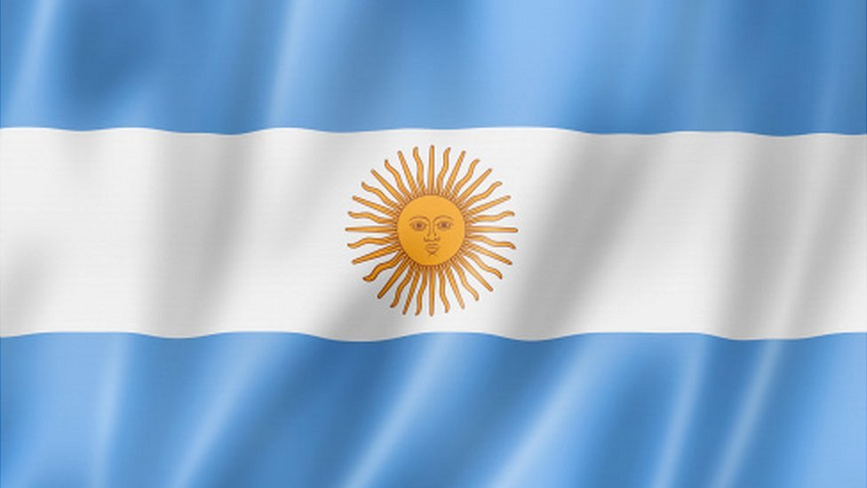
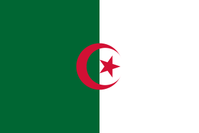
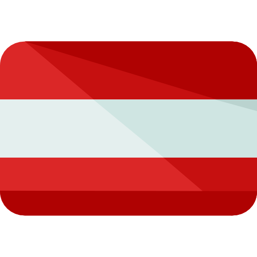
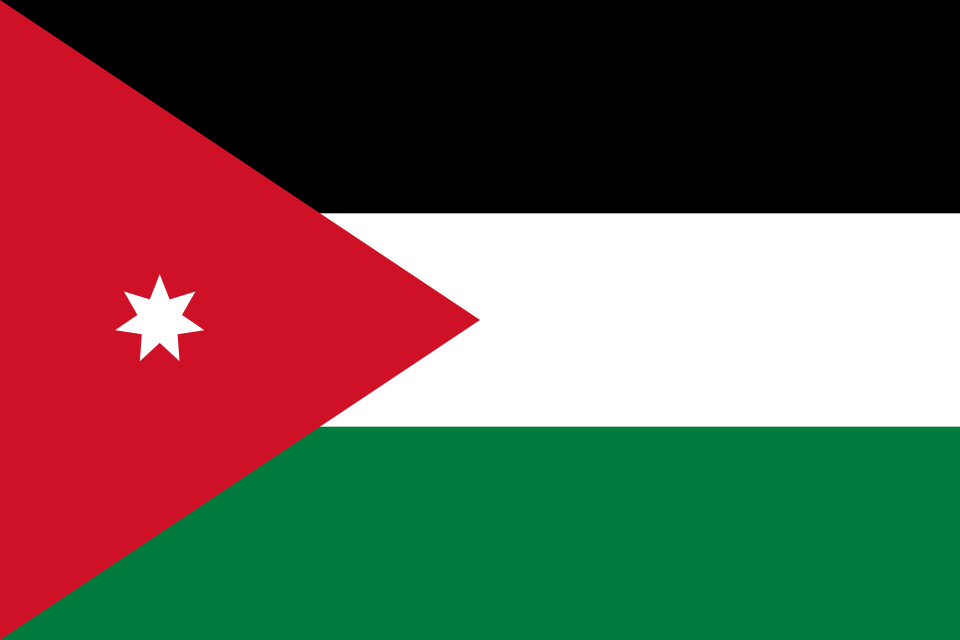
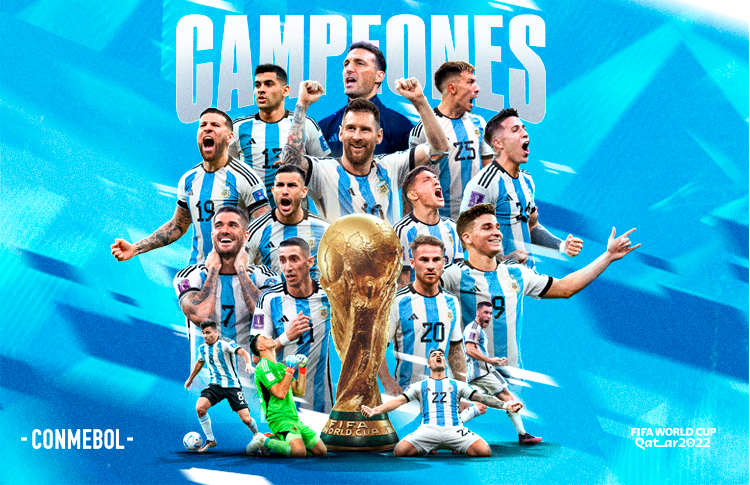

GRUPO J



DETALLE DE SELECCIONES - GRUPO J
Estadios, historia, estadísticas, convocados y curiosidades
Argentina 🇦🇷
Tricampeón 1978, 1986, 2022📍 Sede / Ciudad: Kansas City (Arrowhead Stadium) / Dallas (AT&T Stadium)

🏆 Campeón en Qatar 2022
Participaciones (19)
1930, 1934, 1958, 1962, 1966, 1974, 1978, 1982, 1986, 1990, 1994, 1998, 2002, 2006, 2010, 2014, 2018, 2022, 2026.
Estadísticas Mundiales
47 Victorias | 17 Empates | 24 Derrotas
🏆 Títulos: 1978, 1986, 2022
Clasificación al Mundial 2026
Clasificó en el 1.° puesto de las Eliminatorias Sudamericanas (CONMEBOL).
Historia en la Copa
Potencia histórica que conquistó el mundo con Kempes en 1978, Maradona en 1986 y Lionel Messi en la memorable final de Qatar 2022.
💡 Curiosidad
Es la selección que ha disputado más tandas de penaltis en la historia de las Copas del Mundo (7) y la que más ha ganado (6).
Jugadores Convocados
- Emiliano Martínez
- Rulli
- Lionel Messi
- Julián Álvarez
- Lautaro Martínez
- Alexis Mac Allister
- Enzo Fernández
- Rodrigo De Paul
- Cristian Romero
- Nicolás Otamendi
- Lisandro Martínez
- Nahuel Molina
Austria 🇦🇹
Tercer Puesto 1954📍 Sede / Ciudad: San Francisco (Levi's Stadium) / Seattle (Lumen Field)
Participaciones (8)
1934, 1950, 1954, 1958, 1978, 1982, 1998, 2026.
Estadísticas Mundiales
12 Victorias | 4 Empates | 13 Derrotas
Mejor puesto: 3.º Lugar (1954)
Clasificación al Mundial 2026
Clasificó como líder de su grupo en las Eliminatorias UEFA.
Historia en la Copa
Protagonista en los albores del fútbol europeo con el mítico "Wunderteam" de los años 30, logrando un histórico podio en Suiza 1954.
💡 Curiosidad
Protagonizó junto a Suiza en 1954 el partido con más goles en la historia de los Mundiales (derrota 7-5 en cuartos de final).
Jugadores Convocados
- Alexander Schlager
- David Alaba
- Marcel Sabitzer
- Konrad Laimer
- Christoph Baumgartner
- Marko Arnautović
- Michael Gregoritsch
- Stefan Posch
- Kevin Danso
- Nicolas Seiwald
- Patrick Wimmer
- Phillipp Mwene
Argelia 🇩🇿
Octavos en 2014📍 Sede / Ciudad: Houston (NRG Stadium) / Kansas City (Arrowhead Stadium)
Participaciones (5)
1982, 1986, 2010, 2014, 2026.
Estadísticas Mundiales
3 Victorias | 3 Empates | 7 Derrotas
Mejor puesto: Octavos de final (2014)
Clasificación al Mundial 2026
Líder directo en la fase de grupos de las Eliminatorias Africanas (CAF).
Historia en la Copa
Famosa por sorprender a Alemania en España 1982 y por llevar a la prórroga a los eventuales campeones alemanes en un electrizante partido en Brasil 2014.
💡 Curiosidad
Su victoria 2-1 sobre Alemania Occidental en 1982 provocó el controvertido "Pacto de no agresión de Gijón" entre Alemania y Austria, lo que obligó a la FIFA a programar los últimos partidos de grupos a la misma hora desde entonces.
Jugadores Convocados
- Anthony Mandrea
- Riyad Mahrez
- Ismaël Bennacer
- Said Benrahma
- Amine Gouiri
- Ramy Bensebaini
- Aïssa Mandi
- Houssem Aouar
- Youcef Atal
- Farès Chaïbi
- Rayane Aït-Nouri
- Anis Hadj Moussa
Jordania 🇯🇴
Debutante📍 Sede / Ciudad: Dallas (AT&T Stadium) / San Francisco (Levi's Stadium)
Participaciones (1)
2026 (Primera participación histórica).
Estadísticas Mundiales
0 Victorias | 0 Empates | 0 Derrotas
⭐ Histórico Debut
Clasificación al Mundial 2026
Clasificó históricamente en la 3.ª Ronda de las Eliminatorias Asiáticas (AFC).
Historia en la Copa
Tras alcanzar sorpresivamente la final de la Copa Asiática, consolidaron su crecimiento futbolístico asegurando su primera presencia en la gran cita mundialista.
💡 Curiosidad
Su apodo es "Los Caballeros" (Al-Nashama) y clasificaron tras haber disputado más de 10 procesos eliminatorios sin éxito en el pasado.
Jugadores Convocados
- Yazan Al-Naimat
- Musa Al-Tamari
- Yazan Al-Arab
- Ali Olwan
- Nizar Al-Rashdan
- Noor Al-Rawabdeh
- Ehsan Haddad
- Abdallah Nasib
- Yazeed Abulaila
- Mahmoud Al-Mardi
- Salem Al-Ajalin
- Bara' Marei